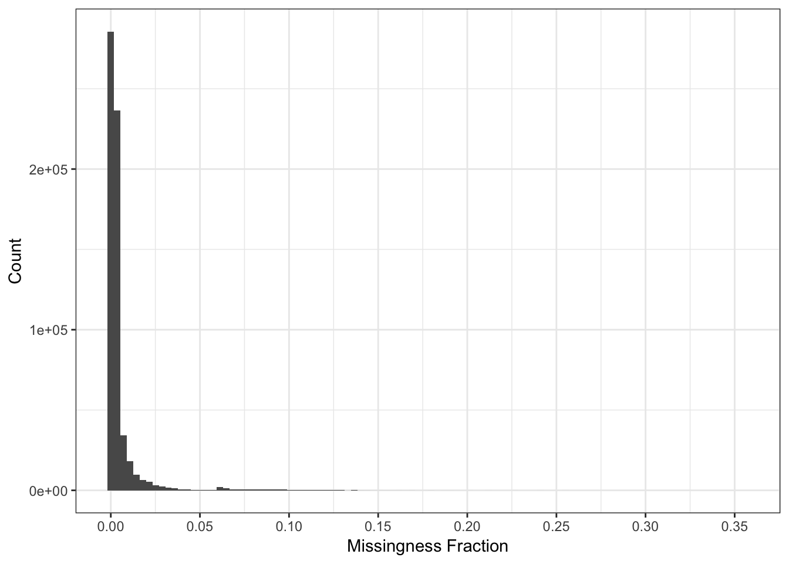

Last updated: 2019-03-05
Checks: 5 1
Knit directory: drift-workflow/analysis/
This reproducible R Markdown analysis was created with workflowr (version 1.2.0). The Report tab describes the reproducibility checks that were applied when the results were created. The Past versions tab lists the development history.
The R Markdown file has unstaged changes. To know which version of the R Markdown file created these results, you’ll want to first commit it to the Git repo. If you’re still working on the analysis, you can ignore this warning. When you’re finished, you can run wflow_publish to commit the R Markdown file and build the HTML.
Great job! The global environment was empty. Objects defined in the global environment can affect the analysis in your R Markdown file in unknown ways. For reproduciblity it’s best to always run the code in an empty environment.
The command set.seed(20190211) was run prior to running the code in the R Markdown file. Setting a seed ensures that any results that rely on randomness, e.g. subsampling or permutations, are reproducible.
Great job! Recording the operating system, R version, and package versions is critical for reproducibility.
Nice! There were no cached chunks for this analysis, so you can be confident that you successfully produced the results during this run.
Great! You are using Git for version control. Tracking code development and connecting the code version to the results is critical for reproducibility. The version displayed above was the version of the Git repository at the time these results were generated.
Note that you need to be careful to ensure that all relevant files for the analysis have been committed to Git prior to generating the results (you can use wflow_publish or wflow_git_commit). workflowr only checks the R Markdown file, but you know if there are other scripts or data files that it depends on. Below is the status of the Git repository when the results were generated:
Ignored files:
Ignored: .Rhistory
Ignored: analysis/.Rhistory
Ignored: analysis/flash_cache/
Ignored: data.tar.gz
Ignored: data/datasets/
Ignored: data/raw/
Ignored: output.tar.gz
Ignored: output/admixture/
Ignored: output/admixture_benchmark/
Ignored: output/benchmark/
Ignored: output/flash_greedy/
Ignored: output/log/
Ignored: output/sim/
Unstaged changes:
Modified: analysis/data_hoa_global.Rmd
Note that any generated files, e.g. HTML, png, CSS, etc., are not included in this status report because it is ok for generated content to have uncommitted changes.
These are the previous versions of the R Markdown and HTML files. If you’ve configured a remote Git repository (see ?wflow_git_remote), click on the hyperlinks in the table below to view them.
| File | Version | Author | Date | Message |
|---|---|---|---|---|
| Rmd | 17bb442 | jhmarcus | 2019-03-05 | addded miss per pop and contributer |
| html | 17bb442 | jhmarcus | 2019-03-05 | addded miss per pop and contributer |
| Rmd | e2a3aba | jhmarcus | 2019-03-05 | updated plink filtering command |
| html | e2a3aba | jhmarcus | 2019-03-05 | updated plink filtering command |
| Rmd | 9a69c08 | jhmarcus | 2019-03-04 | updated data hoa |
| html | 9a69c08 | jhmarcus | 2019-03-04 | updated data hoa |
| Rmd | f8154d8 | jhmarcus | 2019-03-04 | added to data rmd |
| Rmd | a1580ed | jhmarcus | 2019-03-04 | added data exploration |
| html | a1580ed | jhmarcus | 2019-03-04 | added data exploration |
Here I explore basic properties of the Human Origins Array dataset. I downloaded the data from:
https://reich.hms.harvard.edu/sites/reich.hms.harvard.edu/files/inline-files/NearEastPublic.tar.gz
I subsequently converted the eigenstrat files to plink format using the following parameter file and convertf command:
genotypename: HumanOriginsPublic2068.geno
snpname: HumanOriginsPublic2068.snp
indivname: HumanOriginsPublic2068.ind
outputformat: PACKEDPED
genotypeoutname: HumanOriginsPublic2068.bed
snpoutname: HumanOriginsPublic2068.bim
indivoutname: HumanOriginsPublic2068.fam
familynames: NOconvertf -p eig2plink.parI then removed the sex chromosomes using the the following plink command:
plink --bfile HumanOriginsPublic2068 --make-bed --autosome --out HumanOriginsPublic2068_autoLets import some needed packages:
library(ggplot2)
library(tidyr)
library(dplyr)
library(lfa)Here I read the full genotype matrix of the Human Origins dataset:
Y = t(lfa:::read.bed("../data/raw/NearEastPublic/HumanOriginsPublic2068_auto"))[1] "reading in 2068 individuals"
[1] "reading in 616938 snps"
[1] "snp major mode"
[1] "reading snp 20000"
[1] "reading snp 40000"
[1] "reading snp 60000"
[1] "reading snp 80000"
[1] "reading snp 100000"
[1] "reading snp 120000"
[1] "reading snp 140000"
[1] "reading snp 160000"
[1] "reading snp 180000"
[1] "reading snp 200000"
[1] "reading snp 220000"
[1] "reading snp 240000"
[1] "reading snp 260000"
[1] "reading snp 280000"
[1] "reading snp 300000"
[1] "reading snp 320000"
[1] "reading snp 340000"
[1] "reading snp 360000"
[1] "reading snp 380000"
[1] "reading snp 400000"
[1] "reading snp 420000"
[1] "reading snp 440000"
[1] "reading snp 460000"
[1] "reading snp 480000"
[1] "reading snp 500000"
[1] "reading snp 520000"
[1] "reading snp 540000"
[1] "reading snp 560000"
[1] "reading snp 580000"
[1] "reading snp 600000"# number of individuals
n = nrow(Y)
# number of SNPs
p = ncol(Y)Here I compute the missingness per SNP:
n_miss_snp = colSums(is.na(Y))
p_snpmss = qplot(n_miss_snp / n, bins=100) + theme_bw() +
scale_x_continuous(breaks = pretty(n_miss_snp / n, n = 10)) +
xlab("Missingness Fraction") +
ylab("Count")
p_snpmss
There are very few SNPs with high levels of missing data so we can use a very stringent missingness threshold without losing much information.
Here I compute the missingness per individual:
n_miss_ind = rowSums(is.na(Y))
p_indmss = qplot(n_miss_ind / p) + theme_bw() +
xlab("Missingness Fraction") +
ylab("Count")
p_indmss
It seems like a few individuals are missing about 20000 of their SNPs which is a bit worrisome maybe they should be removed from the analysis? For now I will in include them and see if they pop up as any outliers in the PCs.
Here I compute the missingness fraction per population:
# meta data
meta_df = read.table("../data/meta/HumanOriginsPublic2068.meta", sep="\t", header=T)
meta_df$miss_frac = n_miss_ind / p
# average missingness per pop for sorting
avg_miss_df = meta_df %>%
group_by(Simple.Population.ID) %>%
summarise(avg_miss=mean(miss_frac)) %>%
arrange(desc(avg_miss))
# distribution of missingness per pop
p_popmss = ggplot(meta_df, aes(x=factor(Simple.Population.ID,
levels=avg_miss_df$Simple.Population.ID),
y=miss_frac)) +
geom_boxplot() +
theme_classic() +
theme(axis.text.x = element_text(angle = 90, hjust = 1, size=6)) +
xlab("Population") +
ylab("Missingness Fraction")
p_popmss
| Version | Author | Date |
|---|---|---|
| 17bb442 | jhmarcus | 2019-03-05 |
Here I compute the average missingness fraction per contributor:
# average missingness per contributer for sorting
avg_miss_df = meta_df %>%
group_by(Contributor) %>%
summarise(avg_miss=mean(miss_frac)) %>%
arrange(desc(avg_miss))
# distribution of missingness per contributer
p_conmss = ggplot(meta_df, aes(x=factor(Contributor,
levels=avg_miss_df$Contributor),
y=miss_frac)) +
geom_boxplot() +
theme_classic() +
theme(axis.text.x = element_text(angle = 90, hjust = 1, size=6)) +
xlab("Contributer") +
ylab("Missingness Fraction")
p_conmss
| Version | Author | Date |
|---|---|---|
| 17bb442 | jhmarcus | 2019-03-05 |
It seems like there is some variation in the amount of missingness per pop and contributor (there might be some confounding there) but the total amount of missingness is so low I think it can be ignored?
Given the above results here are the plink commands I ran to filter the data:
plink --bfile HumanOriginsPublic2068 --geno .005 --maf .05 --make-bed --autosome --out HumanOriginsPublic2068_auto_maf05_geno005
sessionInfo()R version 3.5.1 (2018-07-02)
Platform: x86_64-apple-darwin13.4.0 (64-bit)
Running under: macOS 10.14.2
Matrix products: default
BLAS/LAPACK: /Users/jhmarcus/miniconda3/lib/R/lib/libRblas.dylib
locale:
[1] en_US.UTF-8/en_US.UTF-8/en_US.UTF-8/C/en_US.UTF-8/en_US.UTF-8
attached base packages:
[1] stats graphics grDevices utils datasets methods base
other attached packages:
[1] lfa_1.12.0 dplyr_0.8.0.1 tidyr_0.8.2 ggplot2_3.1.0
loaded via a namespace (and not attached):
[1] Rcpp_1.0.0 compiler_3.5.1 pillar_1.3.1 git2r_0.23.0
[5] plyr_1.8.4 workflowr_1.2.0 tools_3.5.1 digest_0.6.18
[9] evaluate_0.12 tibble_2.0.1 gtable_0.2.0 pkgconfig_2.0.2
[13] rlang_0.3.1 yaml_2.2.0 xfun_0.4 withr_2.1.2
[17] stringr_1.4.0 knitr_1.21 fs_1.2.6 rprojroot_1.3-2
[21] grid_3.5.1 tidyselect_0.2.5 glue_1.3.0 R6_2.4.0
[25] rmarkdown_1.11 purrr_0.3.0 corpcor_1.6.9 magrittr_1.5
[29] whisker_0.3-2 backports_1.1.3 scales_1.0.0 htmltools_0.3.6
[33] assertthat_0.2.0 colorspace_1.4-0 labeling_0.3 stringi_1.2.4
[37] lazyeval_0.2.1 munsell_0.5.0 crayon_1.3.4